Understand your writing
Explore sentence rhythm, vocabulary, dialogue and tense in your manuscript. Read the passages behind the results to judge what matters for your text.
Explore the language signalsQuantitative text linguistics, sentence rhythm and within-manuscript style references for authors and editors. Inspect diagnostics alongside your Markdown text, keep your research organized, and preserve 100% creative privacy without cloud calls or AI prose rewriting.
Examine the language of your text, compare chapters and connect research with the decisions behind your book.
Explore sentence rhythm, vocabulary, dialogue and tense in your manuscript. Read the passages behind the results to judge what matters for your text.
Explore the language signalsSee how chapters differ from the rest of your manuscript. Compare their language patterns and examine where those patterns change as the book progresses.
Understand chapter comparisonsBring selected sources from Zotero or local files into your research workspace. Link passages to claims, build dossiers and record the reasoning behind your authorial decisions.
Experimental research workspace
Follow the source-to-decision workflowLixity runs locally. Analysis highlights patterns for human review; it does not grade literary quality or establish whether a claim is true.
A chapter of short dialogue may look very different from a descriptive passage. The comparison helps you locate that change; reading the text tells you whether it serves the story.
Open the relevant paragraphs and add a work marker if you want to revisit them. Review notes stay near their passages in the manuscript.
Follow a practical review loop · Look up a metric and its limits
A source dates an event to 1923, but your story moves it to 1924. Keep the source passage, link it to the historical claim and record why you chose a different date. The evidence and the fictional decision remain distinct.
The experimental workspace retains selected PDF/text sources and revision history. Zotero can manage your source catalogue; Lixity connects retained passages with your dossiers, claims and decisions.
Connect Zotero · Work through the CLI example · Back up your research
Install locally, interpret a result, or preserve a source and its evidence trail.
Choose a release or current-main build, create your first dashboard, and reconnect an existing project.
Read consistency, lexical diversity and style deviations with their data requirements and limits.
Record an origin URL, distinguish native PDFs from scans, configure OCR and test a backup.
New in v1.23.0: clearer workspace navigation and local research filters, consistent dialogue token counts, unavailable Show/Tell comparisons shown as dashes, chapter-based scene estimates with explicit units, and PDF extraction warnings preserved through imports. Localized help explains descriptive signals and intentional register differences. See the release notes for scope and compatibility.
Switch between Research & Dossiers, Manuscript & Analysis, and Project & Settings. New/Open and optional guidance remain available in every view. Choosing or dropping a manuscript shows its filename without submitting it; Continue to import… opens the import dialog, and confirmation creates a separate project. Use Open Project to return to an existing archive. Follow the project workflow.
Current-main source and dossier lists filter loaded titles, tags and IDs locally; dossiers also match excerpts and section names. Use Research → Search for full-text archive search. Association choices remain complete, and the capability-gated NDA manager starts collapsed.
Captured on 3 October 2026 from the v1.23.0 UI. Click an image to inspect it, or follow its full-size link. Analysis uses the public-domain Pride and Prejudice sample; project and research workflows use synthetic files, paths and customs-case records.
Dialog images show complete forms, including confirmation controls. Long dialogs scroll in the application; these captures include the full content.
1. Project navigation, settings & import


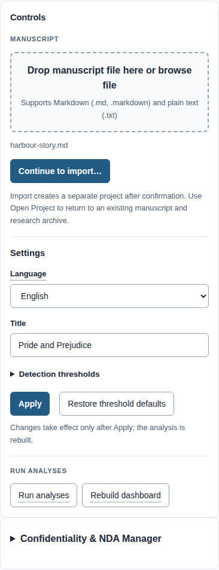
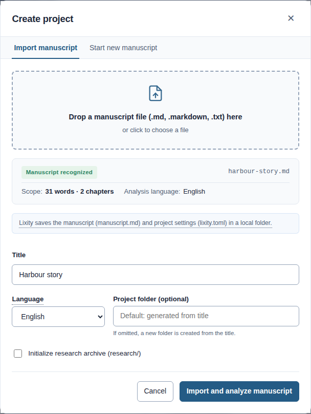
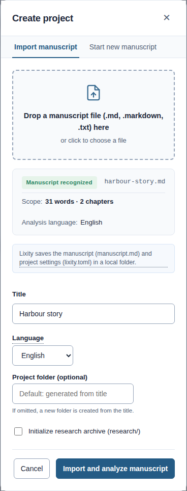
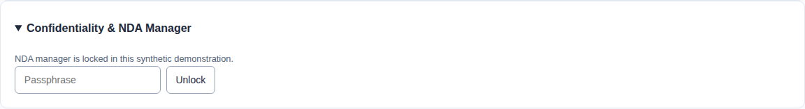
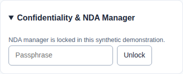


Local list filters inspect loaded metadata without sending requests while typing. They preserve opened details and complete association choices. Full-text archive search is a separate action in the Search tab.
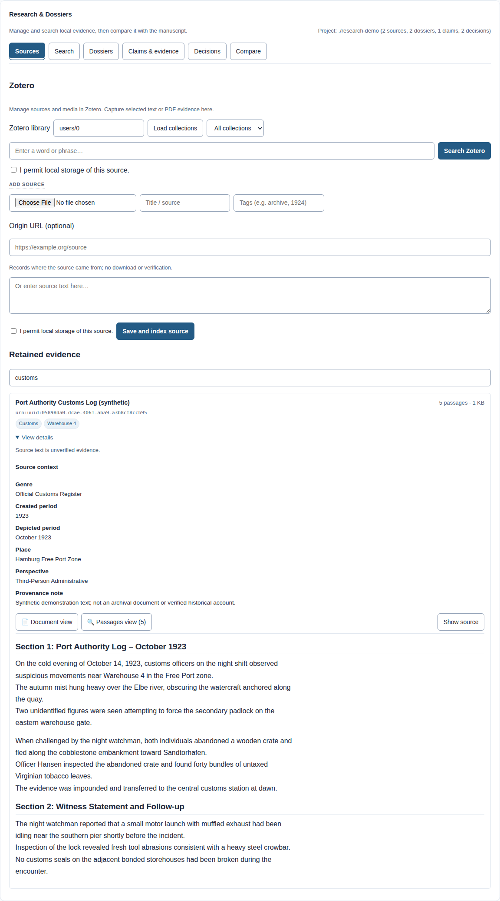
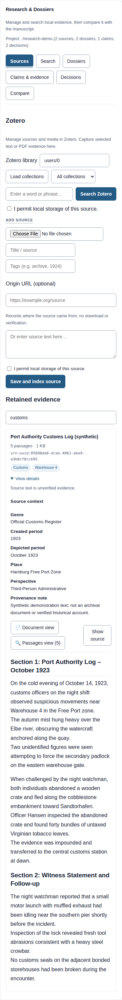
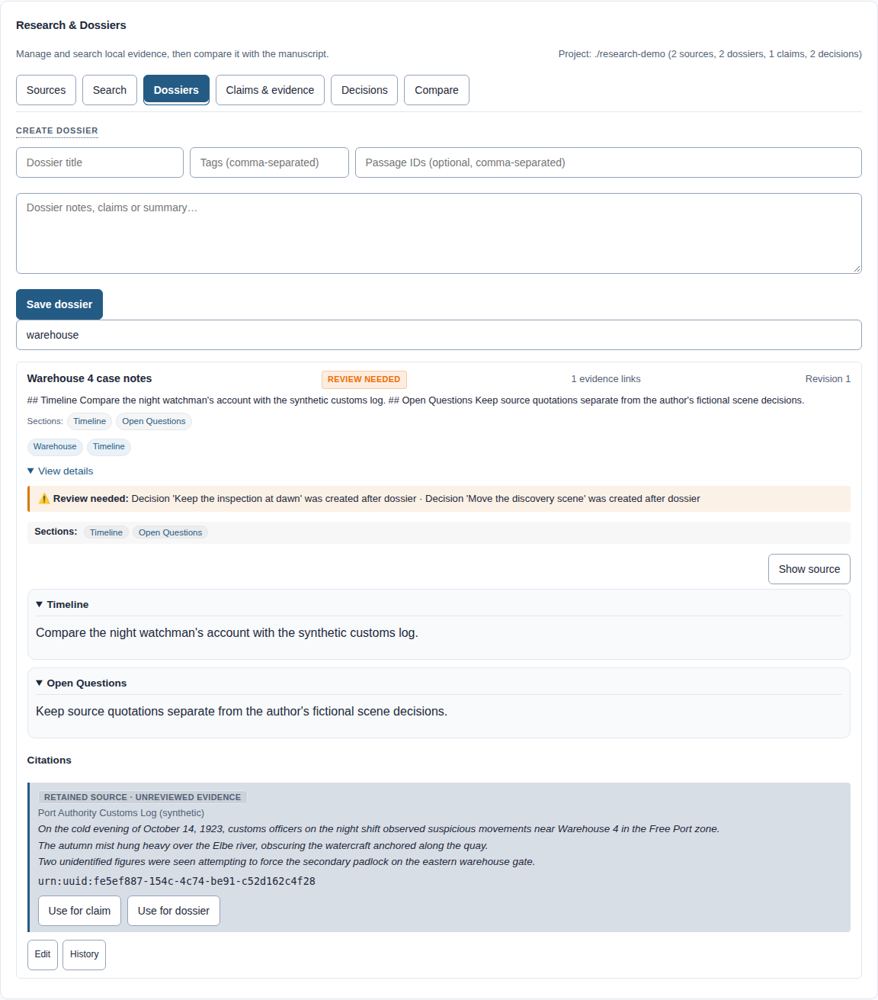
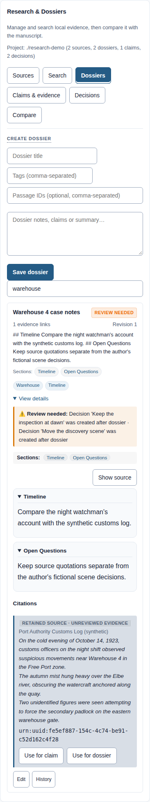
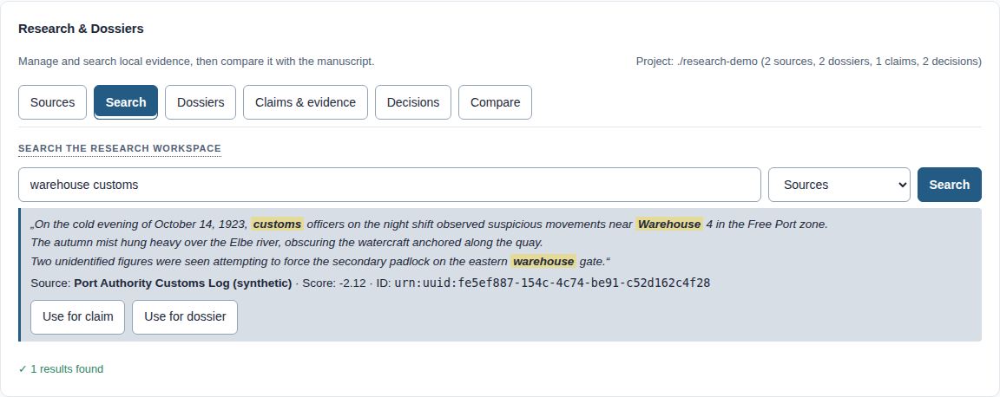
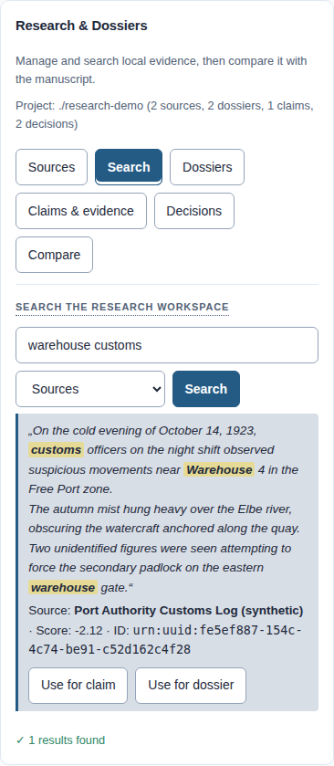

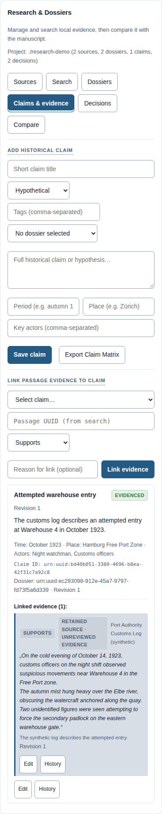
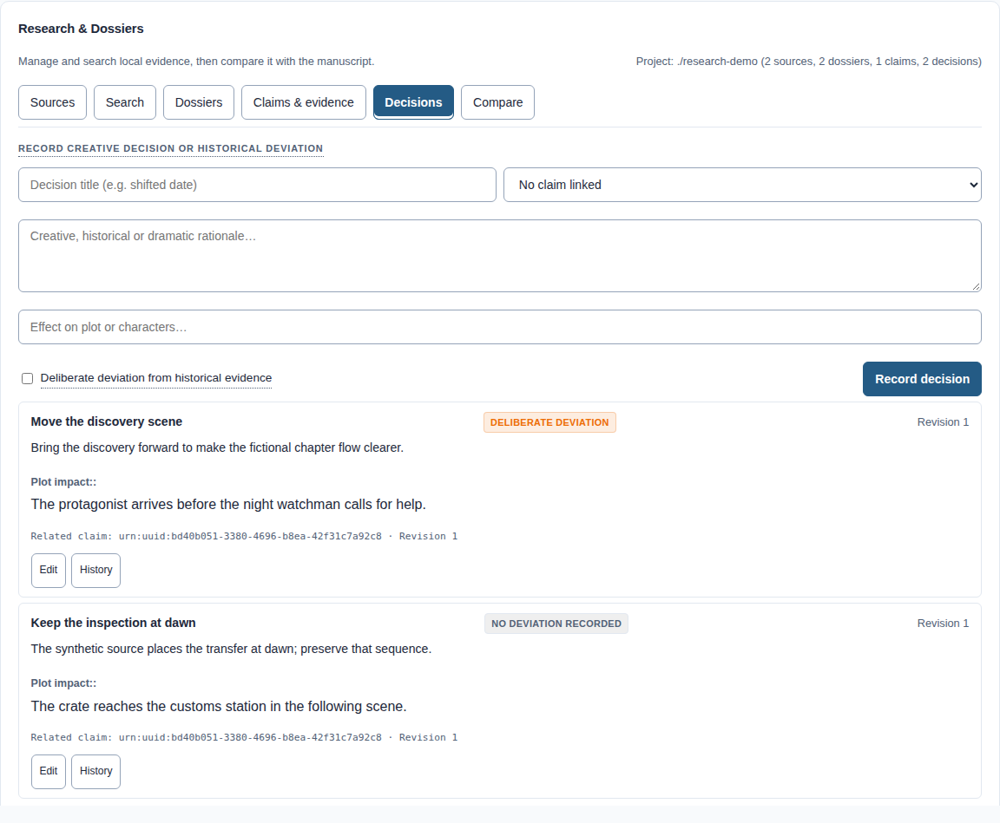
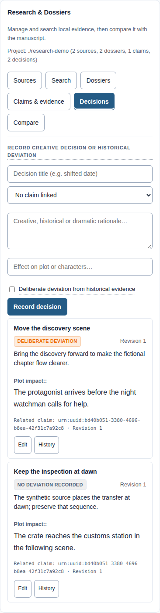


These captures contain public-domain or synthetic content, illustrative marker notes and a locked demo NDA store. No private manuscript or agreement is used. Screenshot provenance and regeneration.
Lixity offers deterministic, versioned JSON contracts (analyze/profile v2, style v4) and stable POSIX exit codes for autonomous coding and editing agents.
Integrate the shared analysis pipeline and dashboard into an explicit project through the Python API and versioned JSON. Reuse the same analysis across command-line and browser workflows.
Typesetting, PDF/EPUB publication and external delivery adapters remain outside Lixity, while native encrypted NDA tracking and isolated keying are built into Lixity. See the integration architecture.
# Analyze manuscript (rich terminal report or JSON) lixity analyze manuscript.md # Visual terminal report lixity analyze manuscript.md --json # Machine-readable JSON (schema v2) # Tense profiling & narrative dynamics lixity profile manuscript.md # Paragraph-level tense heuristics & style profile lixity dialogue manuscript.md # Speech ratios & dialogue turns lixity characters manuscript.md --names "Anna,Ralf" # Character presence lixity pacing manuscript.md # Pacing indicators & chapter-ending patterns lixity showing manuscript.md # Perception, passive and exposition heuristics # Self-calibrating style reference & structural diagnostics lixity style manuscript.md # Median/MAD bounds, z*, FDR matrix lixity style manuscript.md --json --fdr-method by --min-chapters 4 # Interactive dashboard & idempotent workspace build with NDA tracking lixity dashboard manuscript.md -o exports/dashboard.html # Standalone single-file HTML lixity build manuscript.md --language en # Idempotent workspace build with archive rotation & NDA check lixity serve --port 8765 # Local development server & interactive workspace # Evidence-based research workspace (since v1.20.0 with batch & sections) lixity research init --project ./research --title "Archival Study" lixity research batch-ingest --project ./research --allow-retention --progress ./sources/*.txt lixity research search --project ./research --query "warehouse gate" # Auto-fresh cache lixity research dossier --project ./research --title "Smuggling Dossier" --file "Summary..." lixity research read --project ./research --dossier-id <dossier_id> --section "Customs Ledger"
from lixity import api from lixity.research import api as research_api # 1. Compute corpus KPIs & readability metrics = api.analyze(text, language="auto") # 2. Self-calibrating style reference with FDR & structural diagnostics (schema v4) reference = api.fingerprint(text, language="en") # 3. Add persistent editorial work markers updated_text, marker = api.add_marker(text, kind="pruefen", note="Verify tense shift", line=42) # 4. Generate standalone interactive dashboard dashboard_html = api.dashboard(text, language="en", title="My Novel") # 5. Research workspace: archival ingestion, FTS5 search & dossiers research_api.init(proj_path, title="1920s Investigation", language="en") ingest_res = research_api.ingest(proj_path, "customs_1923.txt", allow_retention=True) search_res = research_api.search(proj_path, "warehouse customs", limit=5) dos_res = research_api.create_dossier(proj_path, title="Evidence Brief", body="...", evidence_ids=[...])
Full interface contracts in docs/AGENTS.md · Mathematical derivations in docs/METHODS.md.
Install Lixity in an isolated CLI environment on Linux, macOS, or Windows using uv (or pipx). No account, no API key, and no cloud manuscript uploads required.
# Install via uv (recommended; requires Git & uv) uv tool install --python 3.12 "git+https://github.com/mfahsold/lixity.git@v1.23.0" # Verify installation lixity --version lixity about # Build your first manuscript dashboard lixity build manuscript.md --language en
Open exports/manuscript_dashboard.html in any modern browser. Full setup guide for Windows/macOS, shell completions, and troubleshooting: docs/INSTALLATION.md.
Essential information about offline privacy, linguistic heuristics, and licensing for authors.
Lixity is a local Python engine and development server that runs entirely on your own machine. All linguistic parsing, syllabification, statistical computations, and dashboard generation happen in local memory without outbound network traffic or cloud dependencies.
No. Lixity computes deterministic, transparent metrics (sentence length rhythm, lexical diversity, dialogue ratio, perception filter verbs, and tense distribution). It provides diagnostics, leaving all stylistic and editorial decisions entirely to the author.
Full heuristic support is available for German, English, French, Spanish, Italian, Portuguese, and Dutch. An automatic language detection mode and language-neutral mathematical metrics are also built in.
Instead of measuring your prose against arbitrary external books, Lixity uses your own manuscript's chapters as a self-calibrating baseline. It flags statistically significant outliers in sentence rhythm, pacing, or register using False Discovery Rate (FDR) bounds.
Lixity is source-available and free for private writing, educational use, and academic research under the LNCL-1.0 license. Works intended for commercial sale (including self-publishing and print-on-demand) require a separate commercial license.
Yes. The built-in research workspace lets you archive source passages, link evidence to specific chapters, record authorial decisions, and compare source vocabulary against manuscript grounding with full provenance tracking.
Source-available, not Open Source. LNCL-1.0 permits free use strictly for non-commercial projects. The project's purpose matters – not whether you are an individual author or an organization.
Free for private writing, research and education only when the project has no commercial purpose. These categories are not blanket exemptions.
Required for novels, books, and manuscripts intended for sale (including self-publishing), paid editing, and publishing houses.
Briefly describe your book project, planned publication scope, and timeline:
Das Projekt wird betrieben von:
ROST Services GmbH
Dorfstraße 36
23843 Rümpel
Deutschland
Telefon: 04531 6677725
Mail: info@rost-services.de
Geschäftsführer: René Fromhagen, Timo Helmsing
Handelsregister: Amtsgericht Lübeck, HRB 23529 HL
Umsatzsteuer-Identifikationsnummer: DE360042691
Zur Teilnahme an einem Streitbeilegungsverfahren vor einer Verbraucherschlichtungsstelle sind wir nicht verpflichtet und nicht bereit.